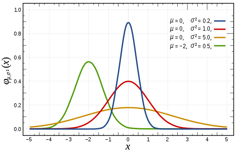
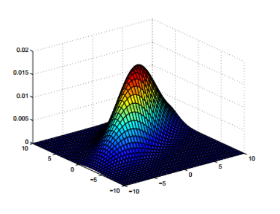
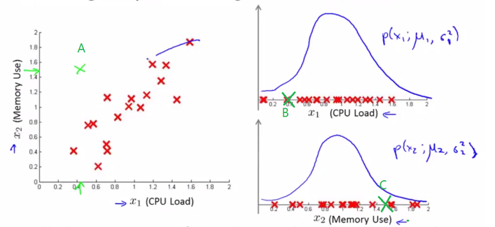
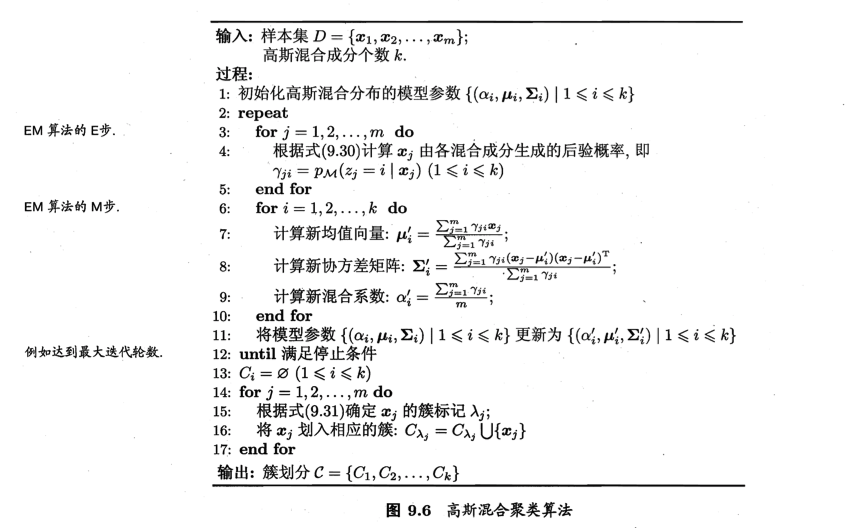

1. 高斯分布
高斯分布（Gaussian Distribution)，又称为正态分布。若随机变量 X 服从一个位置参数为$\mu$ 、尺度参数为$\sigma$的概率分布，记为：
则其概率密度函数为:
正态分布的数学期望值 $\mu$ 等于位置参数，决定了分布的位置；其方差 $\sigma^{2}$ 的开平方或标准差 $\sigma$ 等于尺度参数，决定了分布的幅度。

2. 多元高斯模型
多维变量 X 服从高斯分布时，它的概率密度函数为：
$\mu$为模型期望，$\sum$为模型协方差矩阵。

3. 异常检测
高斯模型通常应用于异常检测。现在我们来看传统高斯模型和多元高斯模型在异常检测方面的区别。

传统模型对于图中所给数据进行异常检测，会按照图中右侧的给出的方式，在每个维度都建立单元高斯模型，之后做乘积运算，得到模型之后，通过设置阈值，进行异常值检测。
多元高斯模型不同与传统模型，后者能在不同维度之间建立相关性。相同的是，多元高斯模型也是通过设置阈值进行异常值检测的。
通常传统模型的计算成本较低，但是要建立不同维度特征之间的相关性就需要通过手动组合建立新特征了。而多元高斯模型能自动捕捉不同特征之间的关系。但是多元高斯模型计算成本较高，而且必须满足样本数 m 大于维度数 n（保证$\sum$可逆），才能应用多元高斯模型，而一般在满足$m \geqslant n$才使用它。
有时候，或者说几乎总是，不能通过一个高斯分布模型来描述所有数据的分布。通常用几个高斯模型才能更精确的描述所有数据的分布。这时候自然就出现了高斯混合模型。
4. 高斯混合模型
高斯混合模型（Gaussian Mixture Model，GMM），顾名思义，就是多个高斯模型的线性组合。由于高斯分布的普遍性（可由中心极限定理得到），在人类世界中，几乎所有的数据都可近似满足高斯分布，问题只不过是用多少个高斯分布能更精确的描述数据的分布。当然，应用其他分布建立混合模型，理论上也能构成复杂的描述模型的，但是高斯函数还具有良好的数学性质，所以能被广泛的应用。
假设一个GMM模型由k个高斯分布组成，将每个高斯模型称为一个Component，那么这些Component线性叠加在一起就组成了GMM的概率密度函数：
其中， 表示每个 Component 的占比，也就是属于此 Component 的概率，另有约束条件$\sum_{k=1}^K{\pi_k}=1$,根据上式，从满足GMM的分布中选取一个点，可分两步完成：
- 随机地在这K个 Component 中选一个，每个 Component 被选中的概率就是它的系数$\pi_k$；
- 选中了 Component 之后，再单独地考虑从这个组件的分布中选取一个点。而这个问题已变成了熟悉的Gaussian分布。
假设已经有了一组数据是由GMM生成的，现在要做的就是如何根据数据推出GMM的概率分布。只需要确定一组参数来使生成这些数据的概率最大就可以了，而这个概率就是每个数据出现的概率乘积$\prod_{i=1}^{N}p(x_i)$。参数未知，计算出现概率，这个概率的乘积也就是似然函数。此模型的对数似然函数为：
5. GMM的贝叶斯理解
若训练集是由GMM生成的，令随机变量$Z_k$表示生成$X$的高斯分量，那么在给定x的条件下，z 的条件概率，可以表示为：
其中$\pi_k$可看作是$z_k = 1$的先验概率，$\gamma(z_k)$可看成是观测到x之后，对应的后验概率。也就是Component k 对于生成此数据 x 的贡献量。
此时，只需要将 x 划分到使$\gamma(z_k)$最大时的 k 类簇里，就完成了 x 数据类的归属。这里与贝叶斯分类有相似之处，都通过贝叶斯公式展开，然后计算类先验概率和类条件概率，但是GMM的类条件概率不能直接求出，因为每个数据都可能属于任一个类簇。
6. EM算法GMM参数估计
首先，GMM 需要确定的参数如下：
- K，高斯混合模型的 Component 个数，需要由人工设定；
- $\pi_k$，每个 Component 的概率，也就是每个 component 下的样本占总样本的比重；
- $\mu_k$, $\sigma_k$,每个高斯 Component 的参数。
6.1 EM算法
- 设定 Component 数目 K，初始化每个 Component 的参数，计算对数似然函数。
E-step:
E-step(Expectation)，计算期望，对应于GMM也就是，根据当前的$\pi_k、\mu_k、\sigma_k$计算后验概率：M-step:
M-step(Maximum), 根据当前的各成分后验概率重新计算各 Component 的参数。也就是各参数的最大似然估计。具体的推导可根据上文的对数似然函数，要使其最大，则对每个参数分别求其偏导，令导为 0，可推出每个参数的表达式，具体可参见 PRML。- 反复迭代E-M，直到收敛为止。
来源：机器学习.周志华
7.GMM和K-means
GMM 和 K-means 很像，都是常用的聚类算法。两个算法都需要人为设定 Component 的个数。在 K-means ,聚类中心的初始化对最终聚类的效果影响显著，而GMM对每个Component的质心初始化也很敏感。不同的是，k-means 是先由参数得到数据的分类标签，再由数据和分类标签来计算参数。高斯混合模型EM算法是先由参数得到数据分类标签的概率分布，再由数据和分类标签来计算参数，二者都是通过迭代执行。K-means 的参数是簇心位置，GMM 则是各个高斯分布的参数。GMM 是基于概率的算法，是通过计算似然函数的最大值实现高斯分布参数的求解的，而 K-means 是计算当前簇中所有元素位置的均值来求解。
8. Python实现
def multiPDF(x, mu, sigma):
"""
多元高斯模型概率密度计算
"""
size = len(x)
if size ==len(mu) and (size, size) == sigma.shape:
detSigma = np.linalg.det(sigma)
try :
div = 1.0 / (np.math.pow(2 * np.pi, len(x) / 2.0) * np.math.pow(detSigma, 1.0 / 2))
except:
print ("except",detSigma)
x_mu = np.matrix(x - mu)
invSigma = np.linalg.inv(sigma)
numerator = np.math.pow(np.math.e, -0.5 * (x_mu.T) * invSigma * x_mu)
result = numerator * div
return result
else:
return -1
def logLikelihood(dataSet, Alpha, Mu, Sigma):
K = len(Alpha)
N, M = np.shape(dataSet)
P = np.zeros([N, K])
for k in range(K):
for i in range(N):
P[i, k] = multiPDF(dataSet[i, :][None].T, Mu[:, k][None].T, Sigma[:, :, k])
result = np.sum(np.log(np.dot(P,Alpha)))
return result
def initEM(dataSet, K):
"""
N: 样本数
M: 样本维度
K: 混合模型个数，或者聚类个数
计算每个样本x 由个混合成分生成的后验概率
W[i,j] 代表i 由第j个模型生成的概率
初始化各项参数，按照原始数据的下标等分到不同的类别中，或者指定到某一成分生成的，利用Mximization 产生参数
"""
N, M = dataSet.shape
W = np.zeros([N, K])
numPerK = N / K
for k in range(K):
start = int(np.floor(k * numPerK))
end = int(np.floor((k + 1) * numPerK))
W[start: end, k] = 1
Alpha, Mu, Sigma = Mstep(dataSet, W)
return W, Alpha, Mu, Sigma
def Mstep(dataSet, W):
# 每一列代表一个聚类/成分，
N, M = dataSet.shape
K = W.shape[1]
# 更新Alpha 混合系数
N_k = np.sum(W, 0) # 每个成分所产生的样本概率和
Alpha = N_k / np.sum(N_k) # /总样本
# 更新mu (M * K) 新均值向量
Mu = np.dot(np.dot(dataSet.T,W),np.diag(np.reciprocal(N_k)))
# 更新协方差矩阵（M*M*K ）（包含k个协方差矩阵)
Sigma = np.zeros([M, M, K])
for k in range(K):
dataMeanSub = dataSet.T - np.dot(Mu[:,k][None].T,np.ones([1,N]))
Sigma[:, :, k] = (dataMeanSub.dot(np.diag(W[:, k])).dot(dataMeanSub.T)) / N_k[k]
return Alpha, Mu, Sigma
def Estep(dataSet, Alpha, Mu, Sigma):
"""
计算每个样本x 由个混合成分生成的后验概率
W[i,j] 代表i 由第j个模型生成的概率
"""
N = dataSet.shape[0]
K = len(Alpha)
W = np.zeros([N,K])
for k in range(K):
for i in range(N):
W[i, k] = Alpha[k] * multiPDF(dataSet[i, :][None].T, Mu[:, k][None].T, Sigma[:, :, k])
# 将每一行也就是一个样本出现的概率归一
W = W * np.reciprocal(np.sum(W, 1)[None].T)
return W
def EM(data,K):
"""
EM 算法GMM参数估计算法主函数
"""
W, Alpha, Mu, Sigma = initEM(data, K)
iter = 0
prevLL = -999999
valLogLikelihood = []
while (True):
W = Estep(data, Alpha, Mu, Sigma)
Alpha, Mu, Sigma = Mstep(data, W)
valLL = logLikelihood(data, Alpha, Mu, Sigma)
iter = iter + 1
if iter % 1 == 0 :
valLogLikelihood.append(valLL)
if (iter > 200 or abs(valLL - prevLL) < 0.000000000001):
break
print valLL
prevLL = valLL
drawLikeliHood(valLogLikelihood)
return Alpha,Mu,Sigma
Reference
- Christopher M. Bishop etc., Pattern Recognition and Machine Learning, Springer, 2006
- 周志华, 机器学习
- Andrew Ng, Machine Learning
- 漫谈 Clustering (3): Gaussian Mixture Model
- GMM与EM共舞
在博主学习过程中，参考了许多他人作品，并整理到笔记，后根据笔记作此篇文章，如文中有引用他人作品部分，还请指出，以添加说明。
请多多指教！